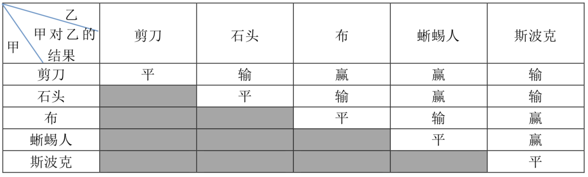

石头剪刀布是常见的猜拳游戏：石头胜剪刀，剪刀胜布，布胜石头。如果两个人出拳一样，则不分胜负。在《生活大爆炸》第二季第8集中出现了一种石头剪刀布的升级版游戏。升级版游戏在传统的石头剪刀布游戏的基础上，增加了两个新手势：
斯波克：《星际迷航》主角之一。
蜥蜴人：《星际迷航》中的反面角色。
这五种手势的胜负关系如表一所示，表中列出的是甲对乙的游戏结果。

现在，小 A 和小 B 尝试玩这种升级版的猜拳游戏。已知他们的出拳都是有周期性规律的，但周期长度不一定相等。例如：如果小 A 以“石头-布-石头-剪刀-蜥蜴人-斯波克”长度为 $6$ 的周期出拳，那么他的出拳序列就是“石头-布-石头-剪刀-蜥蜴人-斯波克-石头-布-石头-剪刀-蜥蜴人-斯波克-……”，而如果小 B 以“剪刀-石头-布-斯波克-蜥蜴人”长度为 $5$ 的周期出拳，那么他出拳的序列就是“剪刀-石头-布-斯波克-蜥蜴人-剪刀-石头-布-斯波克-蜥蜴人-……”
已知小 A 和小 B 一共进行 $N$ 次猜拳。每一次赢的人得 $1$ 分，输的得 $0$ 分；平局两人都得 $0$ 分。现请你统计 $N$ 次猜拳结束之后两人的得分。
 Comet OJ
Comet OJ